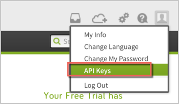
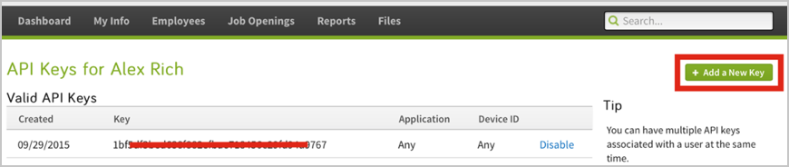
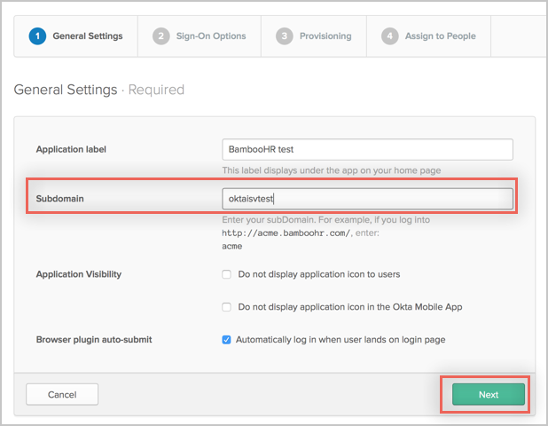
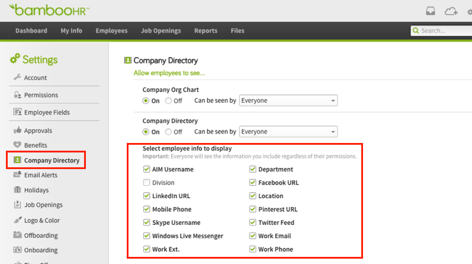
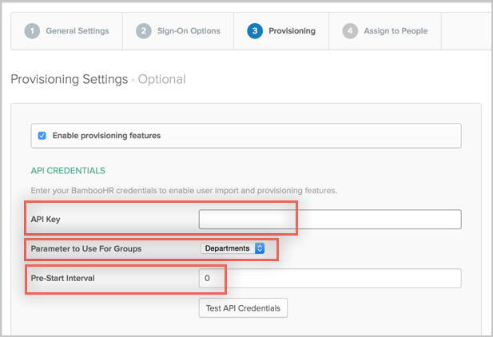
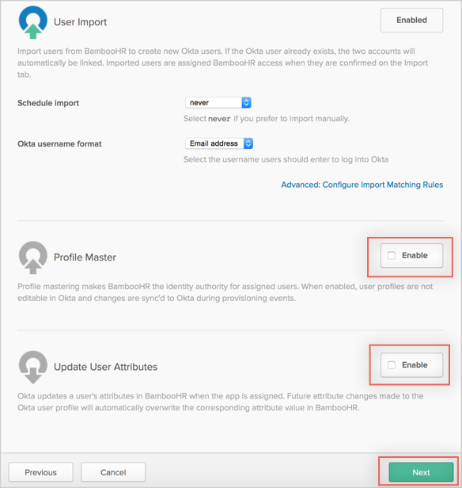
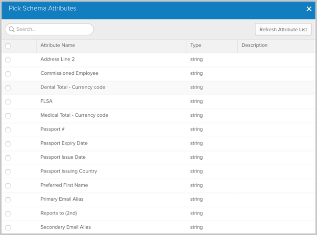

This guide provides the steps required to configure Provisioning for BambooHR.
Notes
This integration cannot create new users in BambooHR. Assigning an Okta user to BambooHR with Provisioning enabled will result in an error. Instead, import existing users from BambooHR first to avoid this error.
Attributes with special characters will be represented with their Unicode values in Okta. For example: if you attribute is ShirtSize# it will be displayed as ShirtSize_U+0023.
The following provisioning features are supported:
Import New Users
Import Profile Updates
Import User Schema
Profile Mastering
Push Profile Updates
Before you start configuring provisioning for BambooHR, you need to obtain a Bamboo API Key:
Login to BambooHR as an administrator.
Select Account Settings in the upper right corner, then select API Keys.

Select Add a new key, or use an existing one if you have one is the list of Valid API Keys
Make a copy of the Key to enter in Okta later in this procedure.

Verify the BambooHR app’s General Settings:
Uncheck Enable provisioning features.
Select the General Settings tab.
Verify that the Subdomain is your BambooHR subdomain. For example, enter company for http://company.bamboohr.com/.
Click Next.

Configure your Sign-On Options on the next tab, then click Next to take you back to the Provisioning tab.
You are now ready to configure your Provisioning Settings as follows:
Click Enable provisioning features.
API Key: Enter the key you copied from BambooHR (step 1) into this field.
Parameter to Use for Groups: You can select any of the following parameters:
Departments
Locations
Divisions
Important: You must have the same value checked in Bamboo settings > Company Directory under Select employee info to display, as shown below.

Pre-Start Interval: Enter the interval in days, so that users with Hire Date ahead of current date and within this interval could be considered active and imported to Okta. For example, if you enter 7, the users with a Hire Date later than one week ahead of current date will not be imported.

Scroll down and select the Provisioning Features you want to enable, either Profile Master or Push User Attributes, then click Next. Note that you cannot enable both of these at the same time, select only one. The ability to have BambooHR be the Profile Master while also having certain attributes (for example, email, phone #) mastered by a different source and updated back into BambooHR is not currently supported.

You can now assign people to the app (if needed) and finish the application setup.
BambooHR supports User's Schema Discovery, so you can add some extra attributes to User's Profile, to do that, follow the instructions below:
In Okta, from the Admin dashboard, select Directory > Profile Editor.
Select the APPS section in the left navigation bar, then find your app in the list.
Check the list of attributes, and if you decide you need more, click Add Attribute. A list of extended attributes will appear:

Select the attributes you want to add, then click Save.
You can now import and push these user attribute values to/from BambooHR